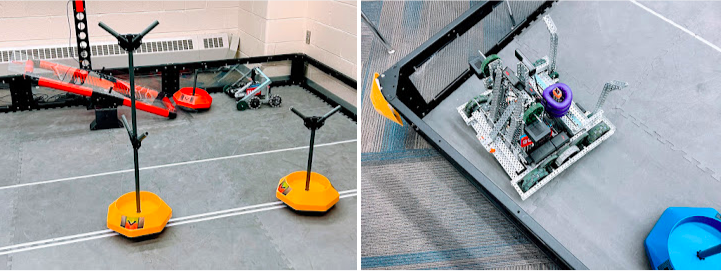
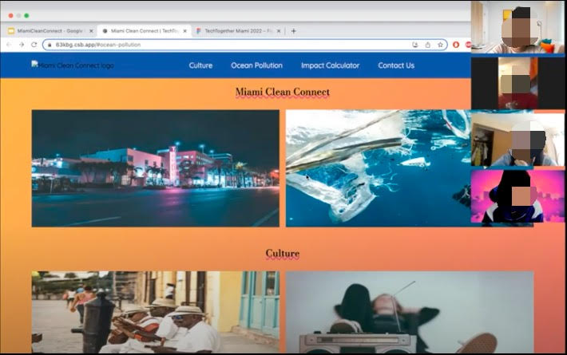
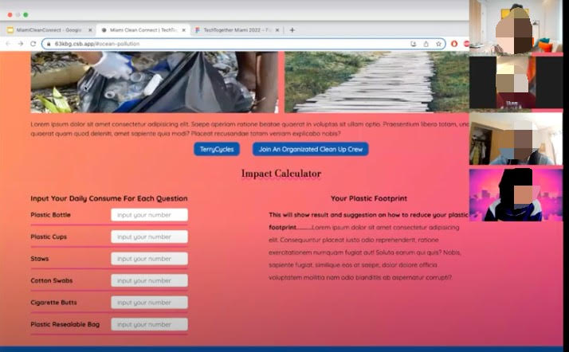
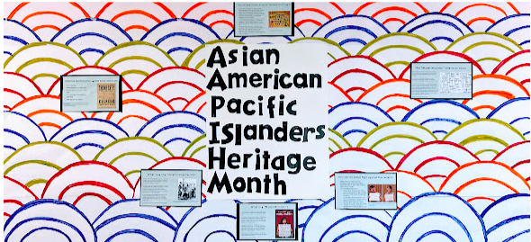
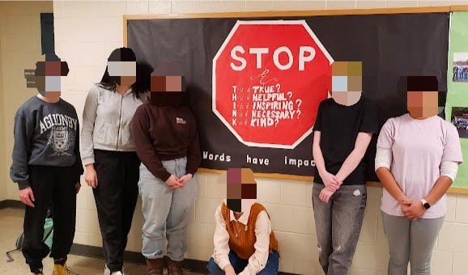

My Portfolio
Vex Robotics Robot
Last year, I spent a majority of time afterschool co-captaining the Robotics team where we competited our way to the VEX World Championships in Dallas, Texas. This year’s challenge was “Tipping Point, which can be described in this video, and we were required to design a robot that could maximize the most points within the game. Despite it being difficult to have enough funding to go to Dallas, we did everything we could and had an amazing time there.
Miami Clean Connect (MCC)
This is project was one of the first experiences of coding competitively in the Techtogether Miami Hackathon. I was randomly put into a team and we all instantly clicked. However, we all had diffcult schdules and couldn’t completely finish the project up to our expectations. It was confusing and difficult especially for me, who was still learning the basics of coding in a group of talented coders.
Our project, Miami Clean Connect, was an web application was designed to fight against climate change and poor environmental practices. It provided our users to feel in control of the issues affecting their local community by enabling to coordinate beach cleanup events with ease.
 Faces blured for confidentiality
Bulletin Boards For Diversity Awareness
During my sophomore year, I was involved with the club: Students for Diversity. In Students for Diversity, we met every Wedndesday to talk about our expirences and participle in activities planned by the club’s officers. However, the club was majorly involved in creating bulletin boards that spread awareness about aspects of Diversity depending on what is celebrated or prevalant that month, day, etc.
 